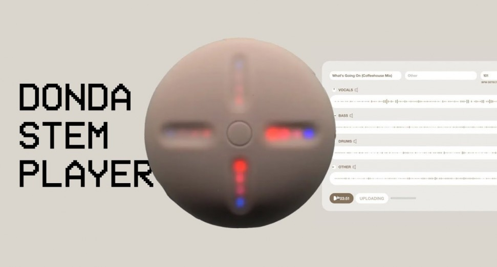

DONDA 2 DISPONIBLE EXCLUSIVAMENTE EN STEMPLAYER
Después de el lanzamiento de su ultimo albúm Donda, el artista Kanye West ha sacado en exclusiva su segundo álbum solo disponible para el dispositivo Stemplayer creado por el mismo
Dentro de este albúm se encuentran colaboraciones con gente como Marilyn Manson, Alicia Keys, Future o el famoso rapero ya fallecido XXXTENTACION, de lo más destacado de estas colaboraciones es la canción llamada"True Love" que la canta junto con este último ya que nadie esperaba volver escuchar al joven rapero de Florida en otra canción
Estos ultimos dias se ha creado cierto revuelo por el lanzamiento del albúm exclusivamente para Stemplayer ya que el dispositivo tiene un precio de 200$
Aun asi hay un truco para escucharlo sin tener que pagar 200$ y es desde la pagina del Stemplayer poner en el apartado de email ye@hotmail.com te deja acceder con una especie de cuenta de invitado la cual nos dará acceso al albúm
Aún así despues de todo el escándalo que ha causado ha conseguido vender varias copias del Stemplayer, ya que este dispositivo tiene varias funcionalidades a nivel muscal como por ejemplo aislar la voz del cantante y que suene a capella o silenciar al artista y que sólo suene la instrumental de la canción

ELIO TOFFANA PRESENTA EN EXCLUSIVA SU NUEVO DISCO, SERIE 5
El veterano rapero madrileño Elio Toffana presentó en exclusiva ante nosotros la salida de su nuevo álbum Serie 5
Elio quiere seguir siendo historia del rap español, lo cual no es fácil con nombres como Mucho muchacho, Kase O, Violadores del verso, Tote o Xhelazz entre otros, actualmente Elio es una de las figuras del rap en español y así quiere seguir siendo con su estilo propio


Elio llama a su nuevo álbum Serie 5 debido a una Road movie que se da lugar en el lugar salvaje de la ciudad, lo que el define que podría ser como una noche por las carreteras salvajes del extraradio de Madrid por la noche, la intención del rapero español es dar una visión cinematográfica con sus letras y que los oyentes puedan sentir el olor del asfalto de su barrio durante los 40 minutos que durará su disco entero
¡Enhorabuena a Elio ya todo su equipo por el trabajazo que han hecho!
JUSTIN QUILES JUNTO A ELADIO CARRIÓN SACAN "GUCCI FENDI"
Justin Quiles acaba de lanzar junto con Eladio Carrión la primera canción que formará parte de su proximo albúm La canción no sólo demuestra su excepcional versatilidad, sino también el crecimiento que ha experimentado como artista. En “Gucci Fendi“, Justin incorpora una hábil maestría lírica y crea una canción relevante y relacionable sobre la necesidad de estar siempre “a la moda” cuando uno sale.

Quiles ha disfrutado de una carrera llena de innumerables hitos que lo han catapultado a otro nivel de éxito y alcance global dentro de la música latina. El cantante cerró un impresionante año 2021 superando las mil millones de reproducciones globales combinadas de su exitoso tercer álbum de estudio, “La Última Promesa“.
FL STUDIO SUPERA EL MILLÓN DE MIEMBROS

El espacio de trabajo FL Studio superó hace poco el millón de miembros. FL Studio es una estación de audio musical de pago la cual se está consolidando como una de los mejores softwares de este tipo compitiendo con otros softwares como Audacity, Adobe Audition, Twisted Wave o Pro Tools.